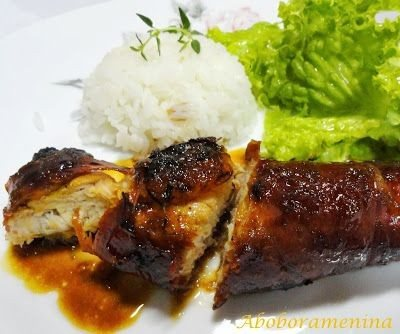

Aves · Frango
Enrolados de frango

Ingredientes
- 2 peitos de frango (cerca de 1 kg no total)
- Sal e pimenta-do-reino a gosto
- 1 ¼ xícara de água
- ¼ xícara de arroz cru
- 1 colher (sopa) de cebolinha verde picada
- 1 cenoura descascada e ralada
- 1 pimentão verde cortado em quadradinhos
- 1 colher (chá) de casca ralada de laranja
- Manteiga para pincelar
- 1 xícara de suco de laranja
- 1 colher (sopa) de maisena
- 1 pitada de sal
Modo de preparo
- Tire a pele e os ossos dos peitos de frango e divida os filés obtidos ao meio, para obter 4 pedaços.
- Numa tábua, bata os filés com o batedor de carne, de modo que fiquem bem fininhos. Tempere com sal e pimenta-do-reino, e reserve.
- Numa panela, misture a água com o arroz cru, a cebolinha, a cenoura, o pimentão e a casca ralada de laranja. Acrescente sal e pimenta-do-reino a gosto. Tampe a panela e leve ao fogo brando por cerca de 20 minutos, até o arroz ficar macio e o líquido ficar todo absorvido.
- Espalhe a mistura de arroz em cima dos filés de frango, enrole cada um formando rolinhos e prenda-os com palitos.
- Arrume os rolinhos um ao lado do outro numa fôrma. Pincele um pouco de manteiga por cima dos rolinhos. Cubra com papel-alumínio e leve ao forno em temperatura média (180 °C) por cerca de 20 minutos, até os rolinhos ficarem macios. Deixe esfriar e congele.
- Em uma panela, junte o suco de laranja com a maisena e a pitada de sal. Misture bem. Leve ao fogo, mexendo sempre, até obter um creme espesso. Deixe esfriar e congele.
Observação
Antes de embrulhar os pedaços de frango para congelar, embeba-os no molho para não ficarem ressecados. Congelamento: leve a fôrma com os rolinhos ao freezer, sem cobrir, até ficarem congelados; passe-os para um saco plástico, retire o ar, vede, etiquete e congele. Coloque o molho de laranja num recipiente rígido, tampe e congele. Descongelamento: na geladeira de um dia para o outro; esquente o molho em fogo brando e despeje sobre os rolinhos aquecidos em forno coberto com papel-alumínio.